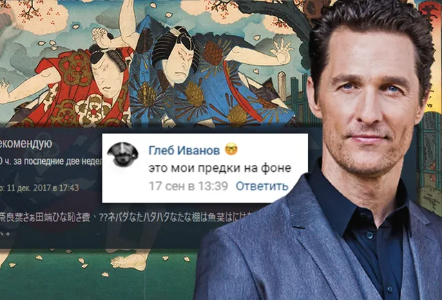
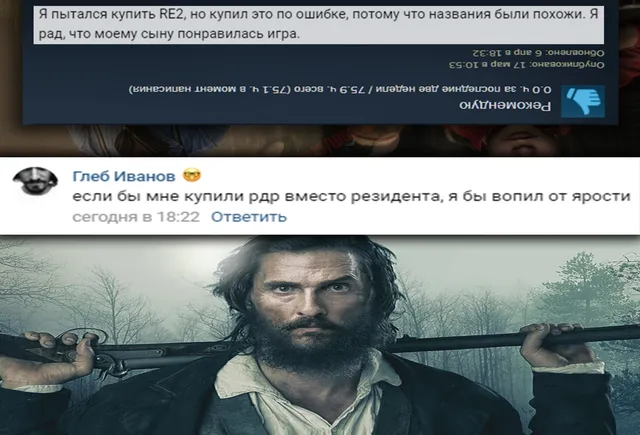
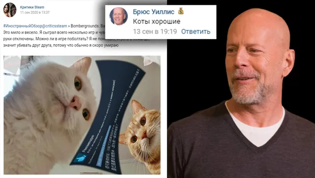
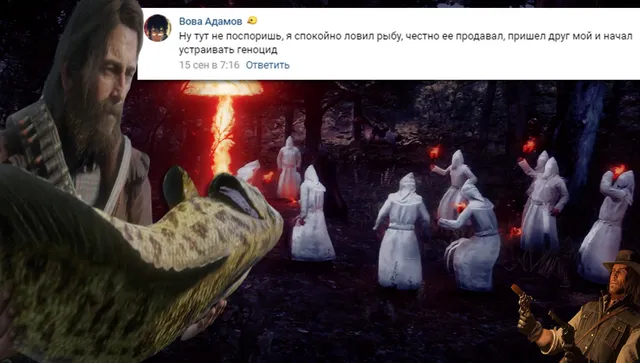

Ваши комментарии
ВКонтакте
🌠Добрейшего вечера, встречайте юбилейный десятый выпуск подборки лучших коммента…
20 сентября 2020 · №511 в выгрузке стены · оригинал во ВКонтакте ↗





#ВашиКомментарии@criticssteam #10
🌠Добрейшего вечера, встречайте юбилейный десятый выпуск подборки лучших комментариев за неделю!
===========
🎗[https://vk.com/@criticssteam-sistema-titulov|Титул] Комментатора сегодня получают:
[id119602395|Вова Адамов]
[id191917835|Глеб Иванов]
[id491132613|Брюс Уиллис]
[id347679904|Андрей Язин]
=======
✍🏻Пишите больше, если хотите видеть такие же насыщенные выпуски каждую неделю!
🌠Добрейшего вечера, встречайте юбилейный десятый выпуск подборки лучших комментариев за неделю!
===========
🎗[https://vk.com/@criticssteam-sistema-titulov|Титул] Комментатора сегодня получают:
[id119602395|Вова Адамов]
[id191917835|Глеб Иванов]
[id491132613|Брюс Уиллис]
[id347679904|Андрей Язин]
=======
✍🏻Пишите больше, если хотите видеть такие же насыщенные выпуски каждую неделю!